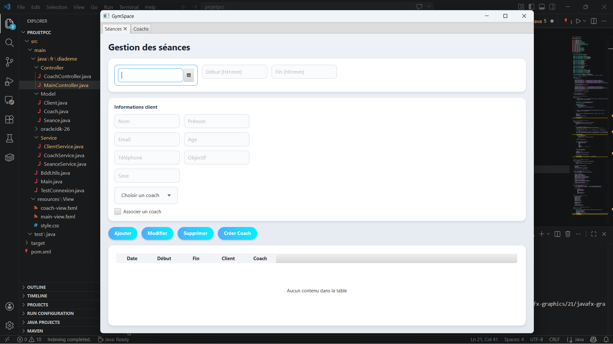
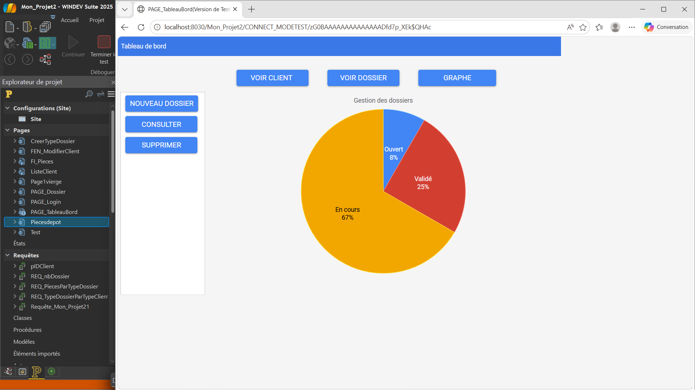

Mes projets
Projets réalisés durant ma formation et en autonomie.

Portfolio
Site personnel développé en HTML et CSS lors de mes 2 ans de formation en BTS SIO. J’ai réalisé ce projet entièrement en autonomie, de la conception à la mise en œuvre

Gestion salle de sport
Application JavaFX pour gérer des entraînements sportifs. J’ai réalisé ce projet en autonomie, de la conception à l’implémentation. J’ai conçu la structure de l’application, développé les fonctionnalités et mis en place l’interface utilisateur.

Gestion CCISM
Application de gestion de dossiers avec base HFSQL (Webdev). Durant ce stage, j’ai participé au développement de l’application web. Notre tuteur nous a demandé de développer une application de gestion de dossier pour la CCISM. J’ai contribué à la création de fonctionnalités, à la gestion des données avec une base de données et à l’amélioration de l’interface utilisateur.